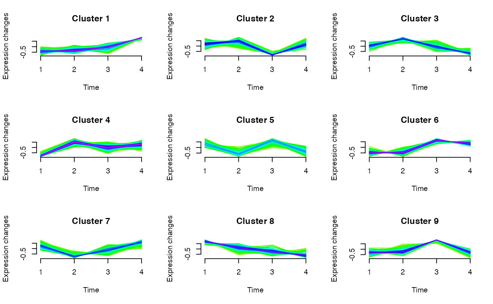

R/micro_array.R
clustExploration-micro_array-method.RdBased on soft clustering performed by the Mfuzz package.
# S4 method for micro_array clustExploration(microarray, new.window = FALSE)
| microarray | A microarray to cluster |
|---|---|
| new.window | Boolean. New X11 window for plots. Defaults to FALSE. |
A data.frame of nrows(microarray) observations of 3 variables (name, cluster, maj.vote.index).
Bertrand Frederic, Myriam Maumy-Bertrand.
library(Patterns) if(require(CascadeData)){ data(micro_S, package="CascadeData") D<-Patterns::as.micro_array(micro_S[1:100,],1:4,6) a<-clustExploration(D) a }#> #>#> #> #> #> #>#> #> #>#> #> #>#> #> #> #> #> #> #> #>#> #> #> #> #>#> #>#> #> #>#> #> #>#> name cluster maj.vote.index #> 1 1007_s_at 6 2 #> 2 1053_at 4 3 #> 3 117_at 4 3 #> 4 121_at 7 2 #> 5 1255_g_at 4 3 #> 6 1294_at 3 3 #> 7 1316_at 2 2 #> 8 1320_at 1 2 #> 9 1405_i_at 7 2 #> 10 1431_at 6 2 #> 11 1438_at 5 2 #> 12 1487_at 8 3 #> 13 1494_f_at 2 3 #> 14 1598_g_at 6 2 #> 15 160020_at 6 3 #> 16 1729_at 1 1 #> 17 1773_at 2 2 #> 18 177_at 6 2 #> 19 179_at 6 2 #> 20 1861_at 5 2 #> 21 200000_s_at 8 2 #> 22 200001_at 2 2 #> 23 200002_at 4 2 #> 24 200003_s_at 5 2 #> 25 200004_at 1 2 #> 26 200005_at 8 2 #> 27 200006_at 8 4 #> 28 200007_at 7 3 #> 29 200008_s_at 1 3 #> 30 200009_at 9 4 #> 31 200010_at 3 3 #> 32 200011_s_at 1 2 #> 33 200012_x_at 6 2 #> 34 200013_at 1 2 #> 35 200014_s_at 1 2 #> 36 200015_s_at 5 3 #> 37 200016_x_at 2 4 #> 38 200017_at 6 3 #> 39 200018_at 7 3 #> 40 200019_s_at 5 3 #> 41 200020_at 7 2 #> 42 200021_at 2 2 #> 43 200022_at 4 3 #> 44 200023_s_at 5 3 #> 45 200024_at 4 2 #> 46 200025_s_at 3 1 #> 47 200026_at 1 1 #> 48 200027_at 1 3 #> 49 200028_s_at 2 3 #> 50 200029_at 4 2 #> 51 200030_s_at 7 2 #> 52 200031_s_at 3 2 #> 53 200032_s_at 1 2 #> 54 200033_at 3 3 #> 55 200034_s_at 4 2 #> 56 200035_at 2 2 #> 57 200036_s_at 3 1 #> 58 200037_s_at 2 3 #> 59 200038_s_at 4 2 #> 60 200039_s_at 8 2 #> 61 200040_at 1 2 #> 62 200041_s_at 8 3 #> 63 200042_at 8 3 #> 64 200043_at 8 2 #> 65 200044_at 1 2 #> 66 200045_at 1 3 #> 67 200046_at 8 3 #> 68 200047_s_at 8 2 #> 69 200048_s_at 9 2 #> 70 200049_at 7 3 #> 71 200050_at 1 2 #> 72 200051_at 7 2 #> 73 200052_s_at 1 2 #> 74 200053_at 5 2 #> 75 200054_at 1 4 #> 76 200055_at 8 2 #> 77 200056_s_at 1 2 #> 78 200057_s_at 9 2 #> 79 200058_s_at 1 2 #> 80 200059_s_at 1 2 #> 81 200060_s_at 1 2 #> 82 200061_s_at 4 2 #> 83 200062_s_at 6 3 #> 84 200063_s_at 8 6 #> 85 200064_at 8 4 #> 86 200065_s_at 1 2 #> 87 200066_at 1 2 #> 88 200067_x_at 5 4 #> 89 200068_s_at 8 3 #> 90 200069_at 5 2 #> 91 200070_at 3 3 #> 92 200071_at 1 2 #> 93 200072_s_at 3 2 #> 94 200073_s_at 1 2 #> 95 200074_s_at 2 3 #> 96 200075_s_at 1 3 #> 97 200076_s_at 2 2 #> 98 200077_s_at 5 3 #> 99 200078_s_at 1 3 #> 100 200079_s_at 8 4